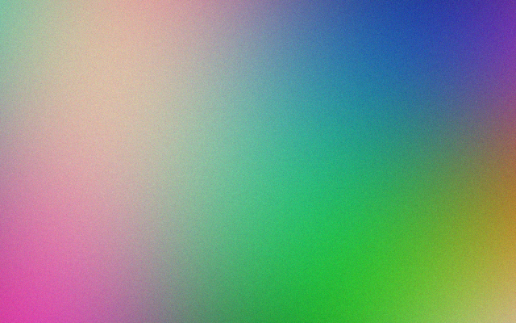
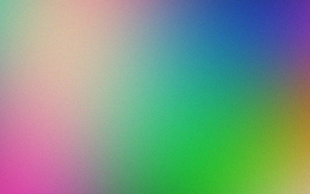

InvisibleQR repeats tiny encoded patterns across an ordinary image. People see the photo. A scanner sees a recoverable code that links to product details, provenance or ownership.


ORIGINALENCODEDRight side carries ID 8F32A91C72B4D610. The difference view amplifies the change 40× — at normal scale it averages about one brightness level per pixel (PSNR ≈ 43 dB).
A poster is encoded with a hidden product ID, printed and scanned crooked (simulated), then decoded back to the exact ID.
{
"protocol": "IQR-1",
"id": "8F32A91C72B4D610",
"type": "image",
"verification": "valid"
}
The CRC catches read errors; authenticity comes from a signed registry record.
For files, screens and social media. Strongest invisibility (≈43 dB).
| Condition | Decoded |
|---|---|
| Lossless PNG | yes |
| JPEG 95 · 85 · 75 · 65 | yes |
| JPEG 55 and below | no |
| Crops down to 120×120 px | yes |
| Resize · rotate · print | use C2 |
For posters and packaging. A faint pilot texture lets the decoder undo scale and rotation; error correction fixes damaged bits.
| Simulated print → scan | Decoded |
|---|---|
| Halftone print, straight scan | yes |
| Scanned 1.3× larger, 3° crooked | yes |
| Scanned smaller, noisy, JPEG 70 | yes |
| Rotated 30° | yes |
| Dark exposure, 12° tilt, 1.5× | yes |
| Real photos, print-file size | 12 / 12 |
| False codes on unmarked images | 0 / 27 |
Any flatbed scanner, phone camera or webcam captures the picture. The InvisibleQR decoder reads the code from it — today a command-line tool, next a phone app. A normal camera app won't see anything on its own.
Payload format, C1 and C2 codecs, error correction, print-scan simulator.
Perspective correction, neural codec, Android scanner app.
Real printers, paper, posters and packaging.
Public spec, reference decoder, signed registry, C2PA link.